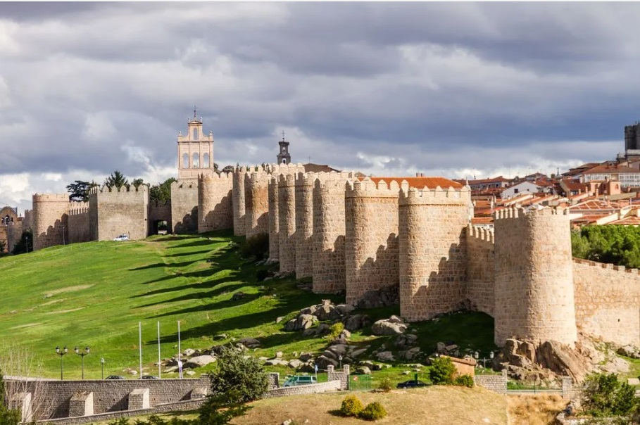
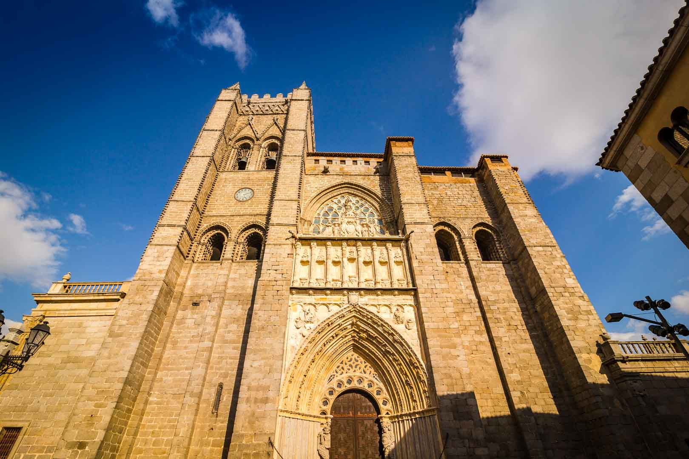
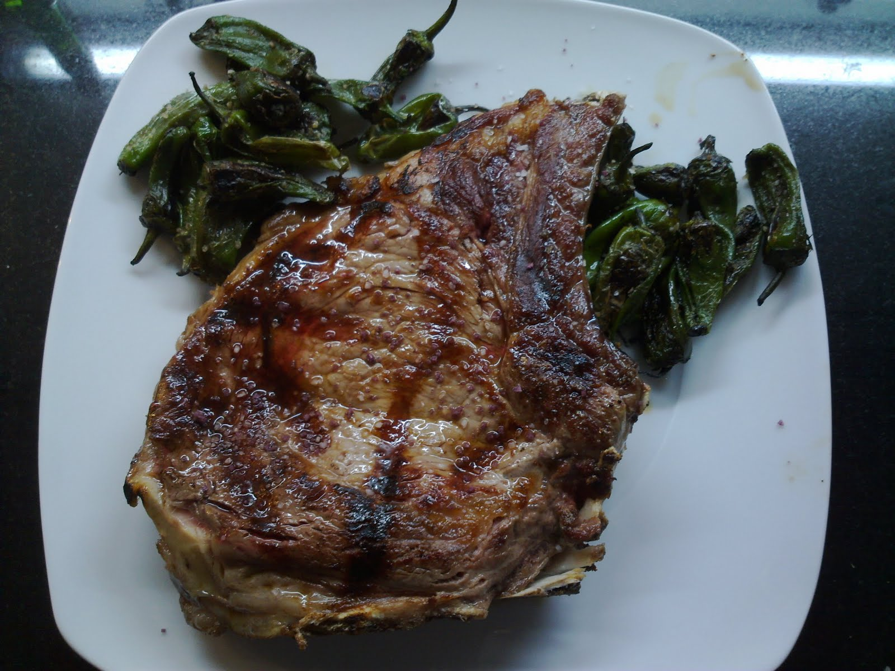

La Muralla de Ávila
La imponente muralla medieval que rodea la ciudad de Ávila es uno de los mayores atractivos turísticos. Con más de 2,500 metros de longitud, es una de las murallas mejor conservadas de Europa. Los visitantes pueden recorrer parte de su adarve y disfrutar de vistas espectaculares de la ciudad.
Catedral del Salvador de Ávila
La Catedral de Ávila es considerada la primera catedral gótica de España. Su robusta arquitectura la convierte en una fortaleza religiosa que impresiona a todos sus visitantes. El interior está adornado con numerosas obras de arte y su altar mayor es un destacado ejemplo del estilo gótico español.
Gastronomía Típica
Ávila es famosa por su chuletón de Ávila, un corte de carne de ternera de gran calidad. Además, el viajero puede disfrutar de otros platos tradicionales como las yemas de Santa Teresa, un delicioso postre que lleva siglos conquistando paladares.
Patrimonio de la Humanidad
El casco antiguo de Ávila y sus iglesias extra-muros fueron declarados Patrimonio de la Humanidad por la UNESCO en 1985. Pasear por sus calles es viajar en el tiempo, descubriendo monasterios, palacios y rincones que narran siglos de historia.